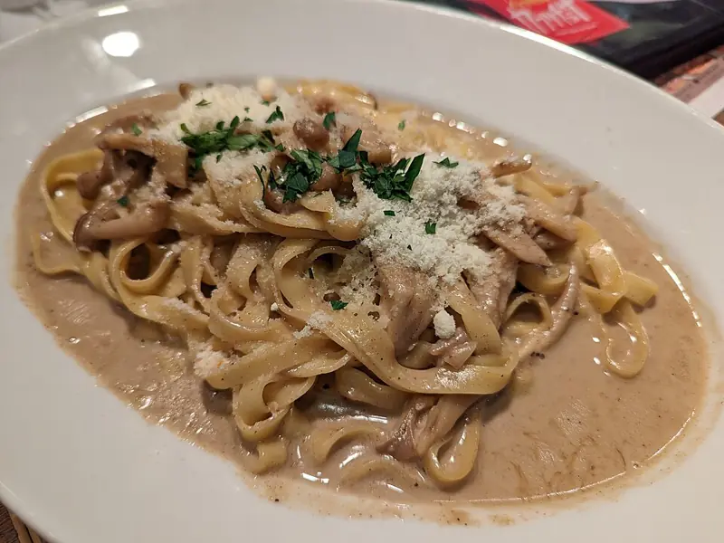

Фото: Syced, CC0

Паста с грибами в сливках
Макароны в сливочном соусе с обжаренными шампиньонами и чесноком
30 мин4 порц.602 ккал на порциюБ 17 · Ж 25 · У 77Итальянская кухня
Продукты на 4 порц.
- Макароны400 г
- Шампиньоны400 г
- Лук репчатый1 шт
- Чеснок2 зуб.
- Сливки 20%300 мл
- Сливочное масло20 г
- Растительное масло1 ст. л.
- Пармезан по желаниюпо вкусу
- Соль1 ст. л.
- Перец чёрный молотыйпо вкусу
- Мускатный орех по желанию1 щеп.
- Петрушка по желаниюпо вкусу
- Вода3000 мл
Как готовить
- Поставьте кипятить 3 л воды для пасты.
- Мелко нарежьте лук и чеснок, грибы пластинами.
- Растопите сливочное масло с растительным, обжарьте лук на среднем огне 3 минуты.
- Добавьте грибы и жарьте на сильном огне 8 минут, пока сок не выпарится и грибы не подрумянятся. В конце положите чеснок.
- Посолите кипящую воду и сварите пасту на 1 минуту меньше, чем на пачке.
- Влейте сливки к грибам, добавьте мускатный орех, щепоть соли, перец и уваривайте на слабом огне 4-5 минут до лёгкой густоты.
- Переложите пасту в соус, перемешайте, посыпьте тёртым пармезаном и петрушкой.
Совет. Сливки не кипятите сильно, иначе они могут свернуться. Если соус загустел, разбавьте ложкой воды от варки пасты.